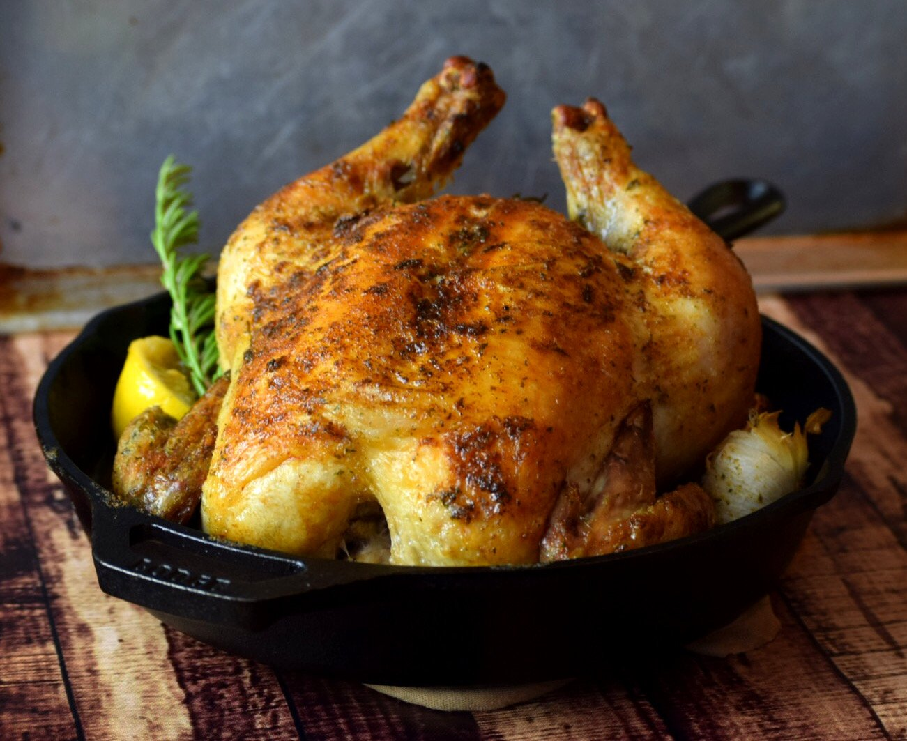

Classic Roast Chicken
What is Classic Roast Chicken?
The recipe for Classic Roast Chicken is a popular dish that has been enjoyed by many people for years. It is a simple yet delicious meal that can be served on any occasion.
Ingredients
1 whole chicken
1/2 cup unsalted butter, softened
4 garlic cloves, minced
1 tablespoon fresh thyme leaves
1 lemon, cut into wedges
Salt and pepper
Instructions / How to Cook
1. Preheat the oven to 220C/450F.
2. Mix together the butter, garlic, thyme, salt, and pepper.
3. Loosen the skin of the chicken and spread the butter mixture under the skin.
4. Rub the remaining butter mixture all over the outside of the chicken.
5. Stuff the cavity with the lemon wedges.
6. Place the chicken in a roasting pan and roast for 10 minutes at 220C/450F.
7. Reduce the oven temperature to 180C/350F and continue roasting for 1 hour and 15 minutes or until the internal temperature of the chicken reaches 75C/165F.
8. Let the chicken rest for 10 minutes before carving.